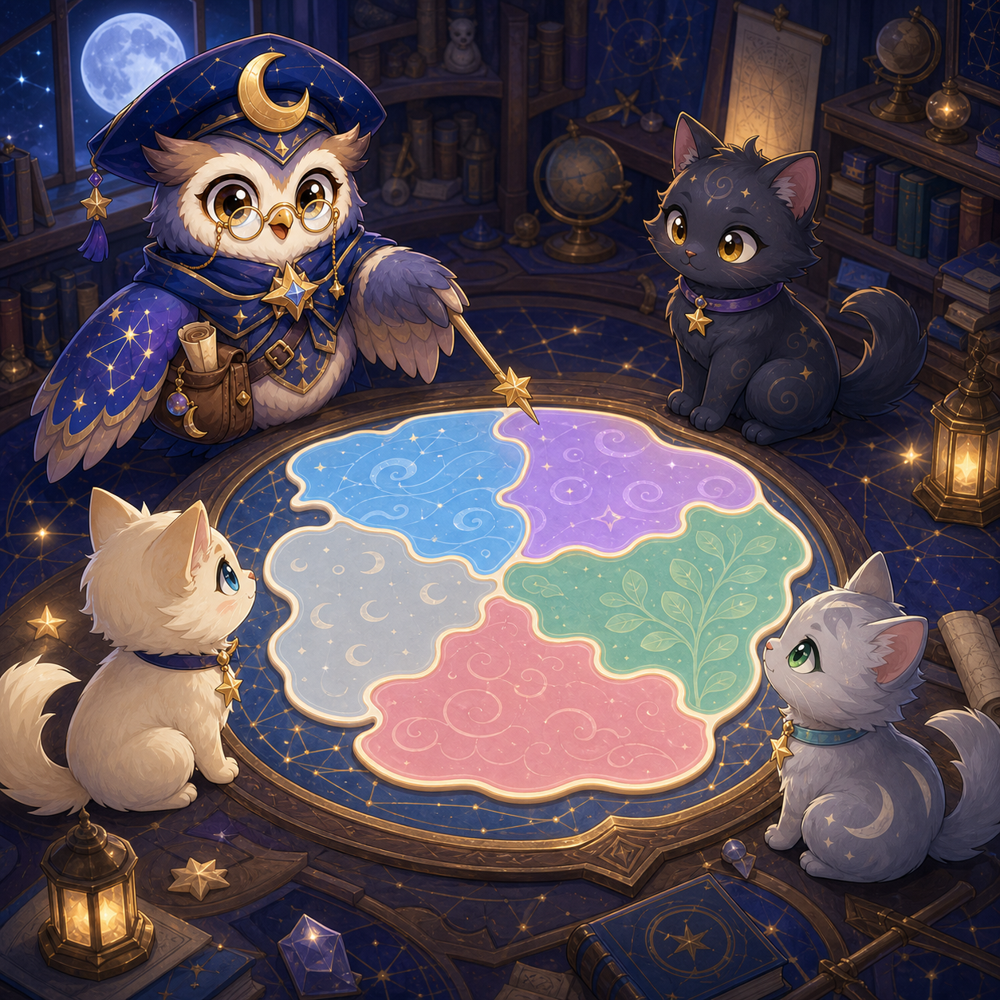

How to play
- Each row contains exactly one cat.
- Each column and each colored territory contains exactly one cat.
- Cats cannot touch, even diagonally.
- Choose Cat or X, then tap a cell. Undo and Restart are always free.

Moon Cap Orla's color atlas
Find one Moonwhisker cat in every row, column, and patterned color territory—without letting any cats touch.
0 / 30 maps solved
Game guide
Place all cats correctly to solve the map. A conflict is rejected immediately, but a tentative assumption can be undone.
Start with a territory that has one legal cell. After placing a cat, mark its row, column, and all eight neighboring cells.
Six chapters grow from guided 4×4 boards to 7×7 mastery. Solving a map unlocks exactly the next one.
Solved maps and each map’s lowest move count stay in this browser. No account or upload is required.
No. Every territory also has a pattern, symbol, and accessible name.
No. It is a cat placement puzzle using row, column, territory, and no-touch constraints.
Hint highlights a cell that can hold the next correct cat; it does not fill the board.
A placement that conflicts with a row, column, patterned territory, or no-touch rule is rejected. Undo restores your previous move.
Place every cat so each row, column, and patterned territory has one, with no cats touching—even diagonally. Solving a map unlocks the next one.